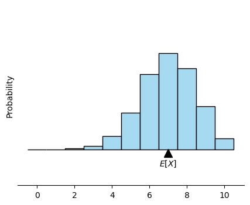
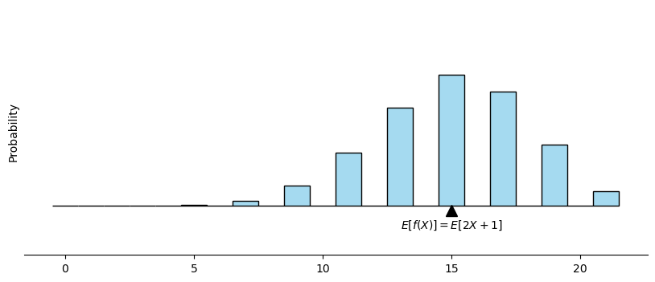

Python Codes#
Later in this course, we will need to use a statistical software such as Python or R, as we won’t be able to make a lot of computations by hand or we won’t be able to recognize or write the probability distribution we’re interested in analytically.
You won’t need to code a lot, but it won’t hurt if you start getting used to Python or R a bit.
If I do a visualization or do a computation using Python, I’ll put the code here.
Drawing the histogram of a binomial distribution:#
# import the necessary packages to compute and visualize in python
import numpy as np
import matplotlib.pyplot as plt
import seaborn as sns
# parameters for the binomial distribution
n = 10
p = 0.7
# generate binomial distribution
data = np.random.binomial(n, p, 10000)
# plot histogram using seaborn
plt.figure(figsize=(5, 4))
sns.histplot(data,
bins=np.arange(-0.5, n+1.5, 1),
kde=False, stat='probability',
color='skyblue',
edgecolor='black')
# calculate expected value E[X] = np
expected_value = n * p
# add a triangle and label it by E[X]
plt.plot(expected_value, -0.01, marker='^', markersize=10, color='black')
plt.text(expected_value, -0.04, '$E[X]$', ha='center', va='center')
# cleaning the graph, we don't need the numbers
plt.ylim(-0.1, 0.4)
plt.tick_params(left=False, bottom=True, labelleft=False, labelbottom=True)
sns.despine(left=True, bottom=False)
plt.show()

How to visualize the expectation of a function#
# import the necessary packages to compute and visualize in python
import numpy as np
import matplotlib.pyplot as plt
import seaborn as sns
# parameters for the binomial distribution
n = 10
p = 0.7
# generate binomial distribution
data = 2*np.random.binomial(n, p, 10000)+1
# plot histogram using seaborn
plt.figure(figsize=(10, 4))
sns.histplot(data,
bins=np.arange(-0.5, 2*n+2.5, 1),
kde=False, stat='probability',
color='skyblue',
edgecolor='black')
# calculate expected value E[X] = np
expected_value = 2*n * p+1
# add a triangle and label it by E[X]
plt.plot(expected_value, -0.01, marker='^', markersize=10, color='black')
plt.text(expected_value, -0.04, '$E[f(X)] = E[2X+1]$', ha='center', va='center')
# cleaning the graph, we don't need the numbers
plt.ylim(-0.1, 0.4)
plt.tick_params(left=False, bottom=True, labelleft=False, labelbottom=True)
sns.despine(left=True, bottom=False)
plt.show()
